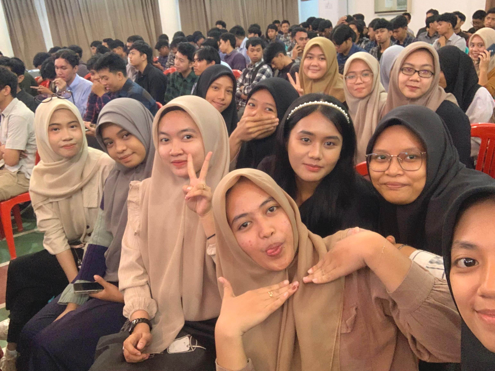
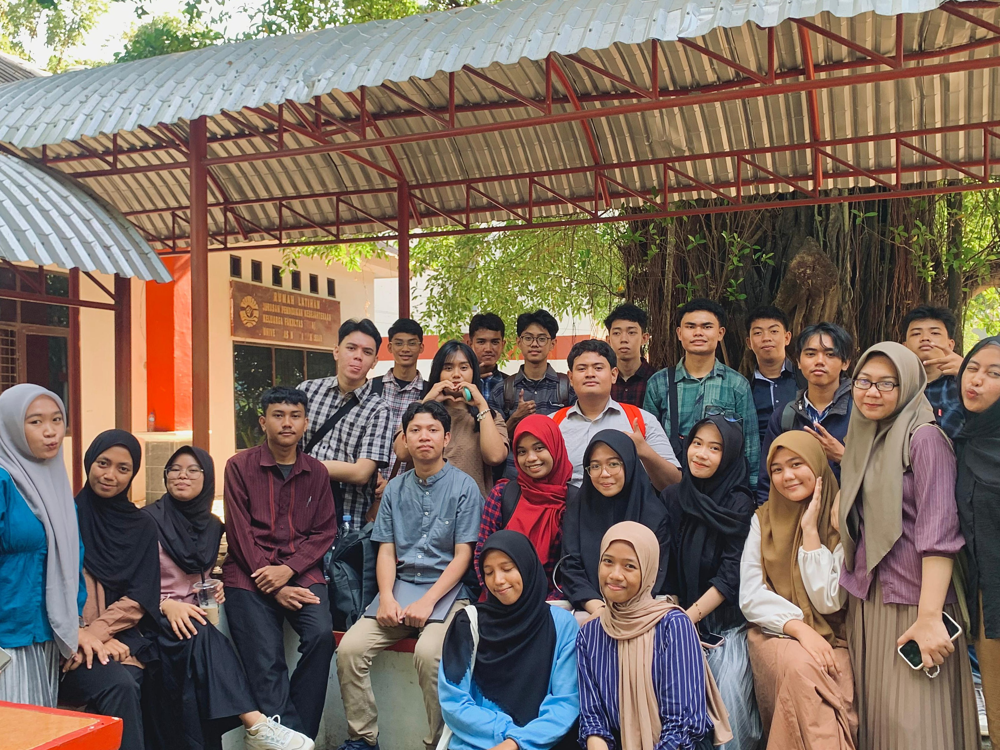
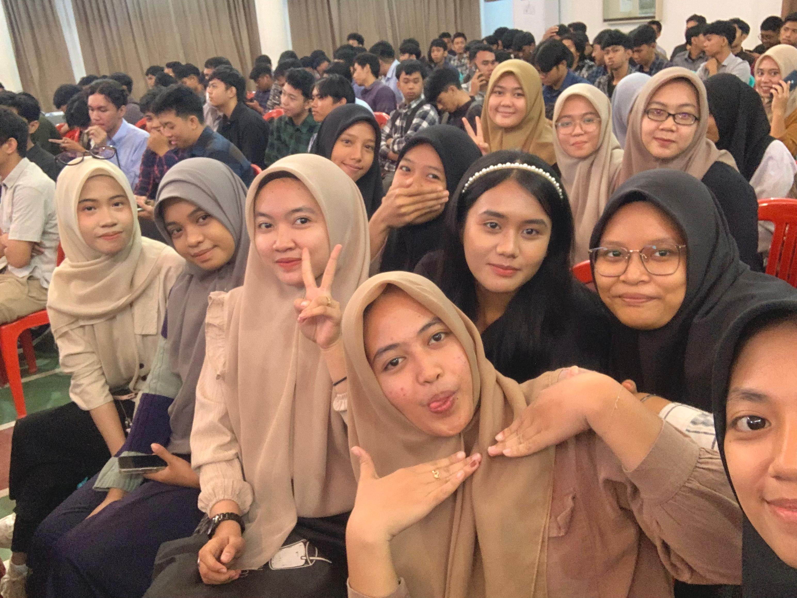
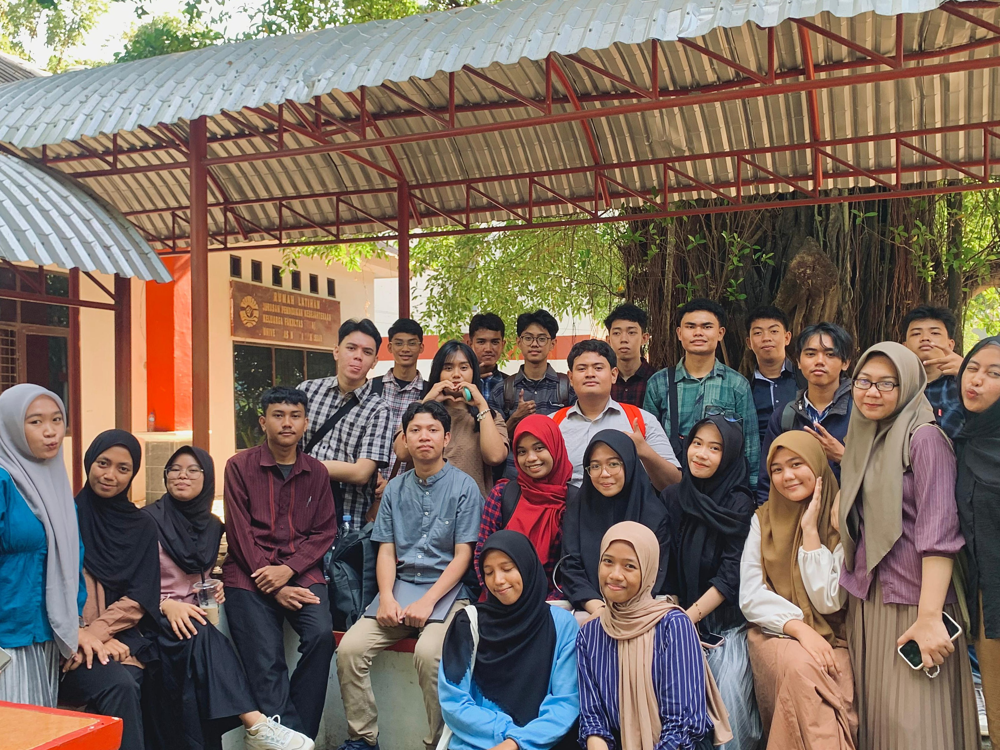

Pengalaman Kuliah Di Tekom
Pada awalnya, memilih jurusan Teknik Komputer adalah keputusan yang sangat berat. Masuk ke Teknik berarti saya harus siap dengan segala tantangan praktikum yang belum pernah saya temui semasa sekolah, seperti memprogram sebuah robot dan merangkai listrik. Tentu banyak hal yang membuat saya kaget, kabel yang bermacam-macam jenis dan tipenya, obeng dengan berbagai mata yang berbeda dan masih banyak lagi.
Tidak mudah bagi saya untuk beradaptasi dengan itu semua. Saya harus harus belajar ekstra untuk mengejar ketertinggal dari teman-teman saya yang merupakan lulusan SMK. Saya sangat bersyukur, begitu banyak teman-teman yang selalu membantu dan mengajarkan banyak hal baru.
- Pemrograman Lanjut
- Pemrograman Web
- Analisis dan Desain Algoritme
- Alifya NFH, S.Pd., M.Pd.
- Ayu Tri Wardani, M.Pd.
- Dewi Fatmarani Surianto, S.KOM., M.Kom.
 


